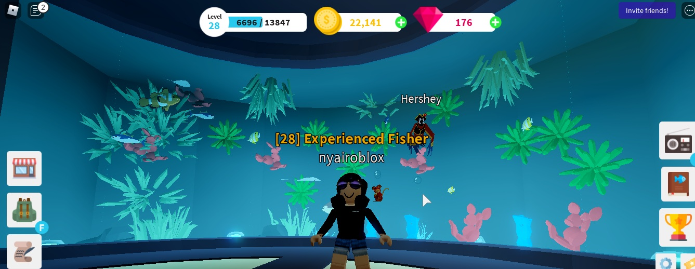
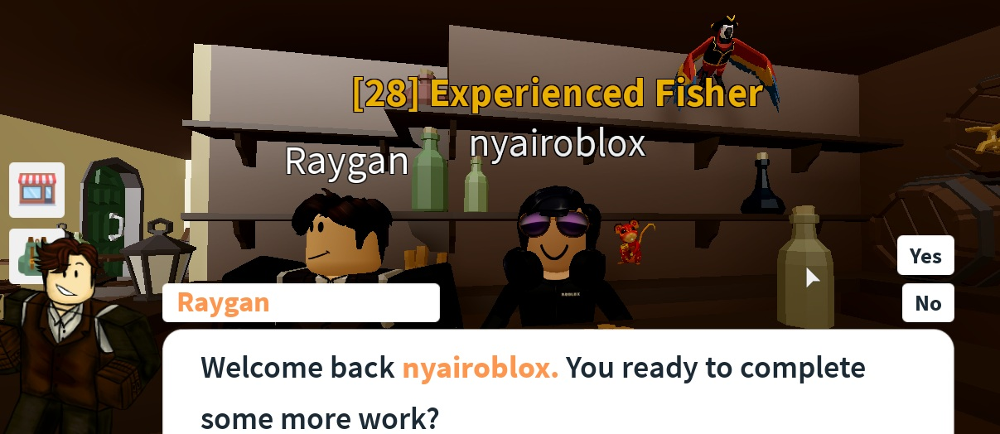
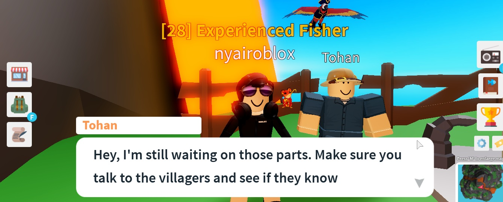
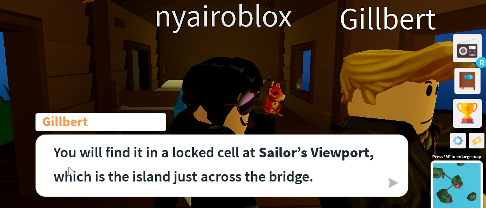

I have so many kinds of fish in my aquarium.
I am level 28 "great fisher".
I have my own boat.
I have a pet named Hershey.
I can invite other players to my aquarium.
Adventures that I do in the game:

I have to do Ragan's quests befor time runs out.
He will give me some gems if I complete the quest.
His place is right across Petrica's Pets.
He needs different types of fish.
Tip: Don't get the quest that has the fish that you don't know instead, get the ones that you know.

At the Eruption Island if you climb up the volocano you will find some one that needs your help.
If you have a special rod, you can fish in the volcano.
You have to find 5 refrigrator parts.
If you talk to the villagers, they seem to know where the parts are.
The man's name is Tohan.

In Shadow Islands, there are a lot of quests.
There is a man who wants barracuda.
One that wants shark heads.
One that wants differnt types of fish.
Also there is a pond that can have Mythical fish.
You can acess the game here!
Fishing Simulator